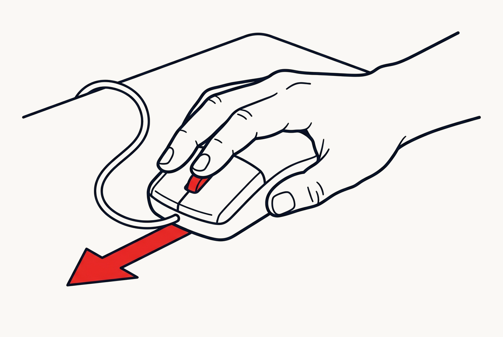
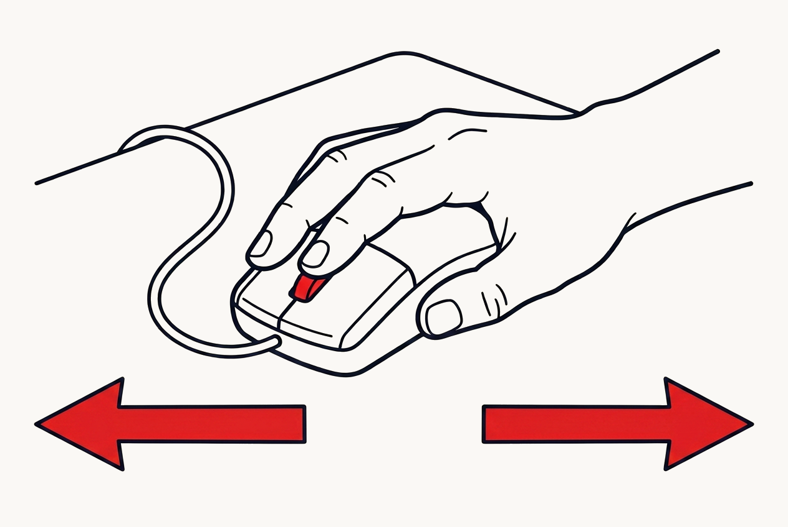
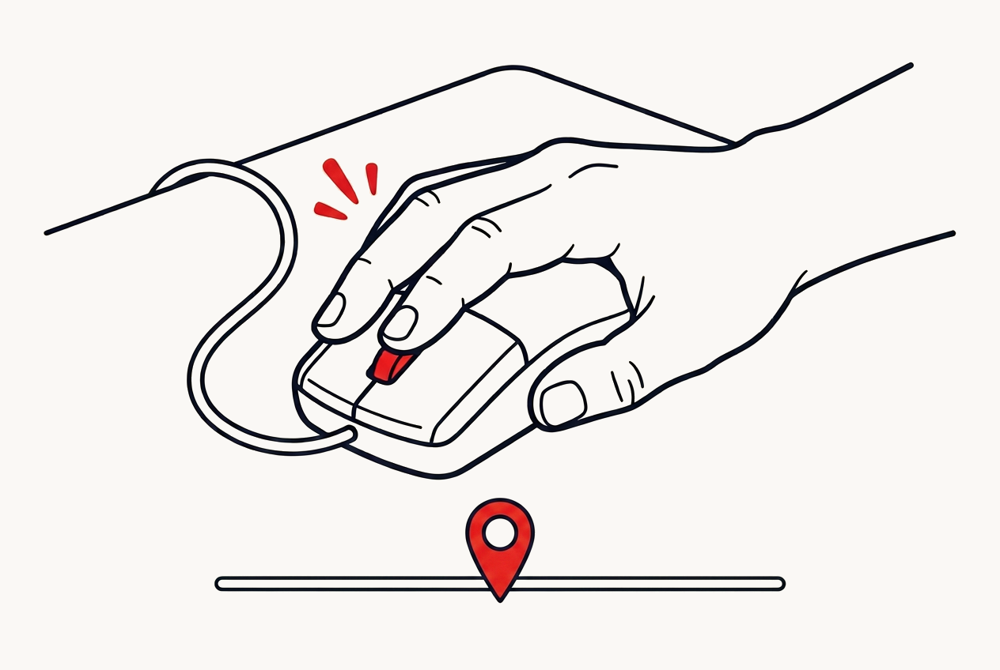
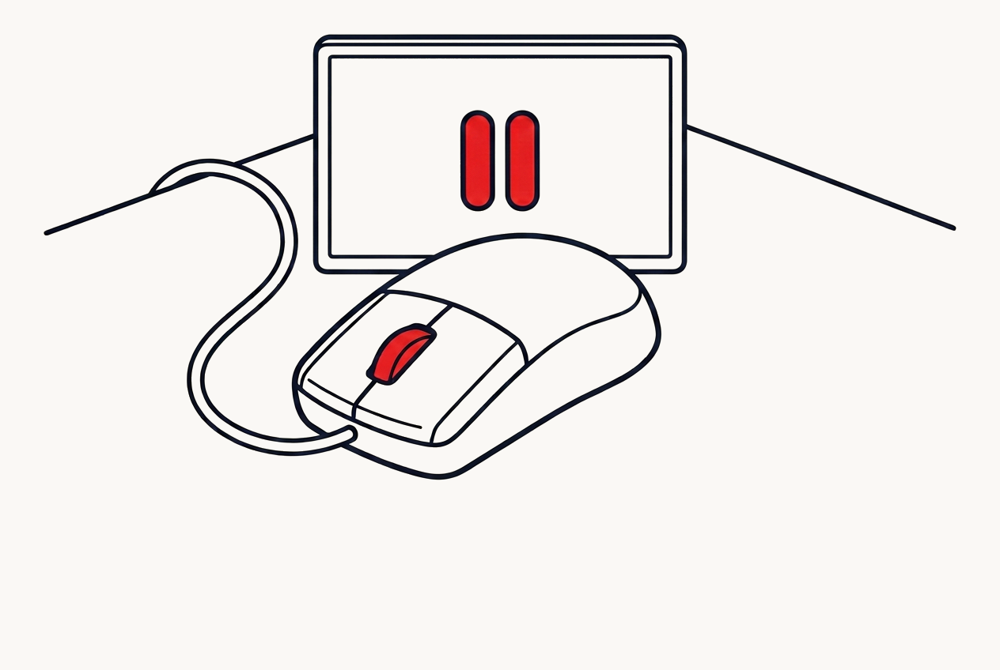

For people who follow along with videos
When you follow a tutorial, are you still... pausing and rewinding one time too many?
Some people don't anymore. illi moves the whole player onto one mouse button. Speed, rewind, your place, all of it, on your next video.
7 days free. No card required.·Built for YouTube today on desktop Chrome, Edge, and other Chromium browsers.
You sat down to learn something. You spent the hour managing a video.
Every pause is a chore.
Click pause. Wait for it to catch. Cross to your other screen. Do the step. Come back. Click again. You'll do it dozens of times in one tutorial. None of it taught you a thing.
You're always at the wrong speed.
The talking drags, so you dig for the speed menu while the video rolls on. Then the hard part hits and you're stuck at 2x, missing the one thing you came for.
The best part slips away.
A tutorial nails one thing, or points to something you meant to check later. No clean way to mark it. So you break your flow now, or you lose it. Usually you lose it.
You can't leave.
You got what you needed, but there might be more ahead. So you keep watching instead of building, because if you go, you lose your place and start over.
You've tried to fix this.
Keyboard shortcuts. The 2x button. They're still buttons, still menus, still friction. You just got used to it.
None of this is learning. It's the tax on learning. And the bill is your time, your momentum, and the skill you actually sat down to learn.
Control the whole video without ever looking away.
One button does it all. Hold your mouse's middle button (the scroll wheel), move, and let go. No menus, no hunting, nothing to look at.

Speed, without the menu.
Hold and drag up to go faster, down to slow down. Let go, and that's your pace.
That fight with the speed setting is over.

Skip and rewind by feel.
Hold and drag right to jump ahead, left to go back. Farther drag, faster travel.
The step you missed stops being a hunt.

Keep the part that mattered.
Double-click to pin a spot on the timeline. One click brings you right back.
The best part stops slipping away.

Walk away. It waits.
Move off the video and it pauses on its own. Come back and it's ready.
No more pause dance. No more watching just so you don't lose your place.
It remembers your pace.
illi keeps the speed you like for each channel while you work, so the next video already moves at your rhythm.
It follows you everywhere.
Sign in once. Your bookmarks and settings sync across every device and browser.
Four moves. One button. No menus. After a tutorial or two, your hand just knows. You stay in control, and you stay in the moment.
illi started with the same tutorials you watch.
I teach myself things from video. It's how I learn best, and honestly, I love it. But I kept falling out of the flow, fighting the player instead of learning: pausing, scrubbing, losing the spot I wanted back.
For a long time, the tools I wished existed just stayed wishes, as I'm not a coder by profession. Then AI coding came along, and illi was one of the first things I built with it, made for the way you and I learn. It was such an unlock that I couldn't keep it to myself. From one self-taught learner to another.
Try it risk free.
7 days free. No card to start. Nothing to enter, nothing to cancel later if you walk away. And if you stay, one click in the extension cancels anytime. The risk is entirely ours.
We'll tell you exactly where it works.
YouTube, on desktop Chrome, Edge, and Chromium browsers. That's it, today. More is coming. A tool that's honest about its edges is one you can trust about everything else.
Don't take my word for it.
★ 4.8 on the Chrome Web Store, from 12 reviews. 250+ installs.
Every plan includes everything.
No feature gating, no upsells.
7 days free. No card required.
illi is live, but the lights aren't all the way on yet. No launch, no announcement, just the extension and the people who found it early.
Try it free first. If it earns its place, lock in $2 a month for your whole first year. Once we launch, pricing starts at $7.
Base price at launch
Prices in USD. Tax calculated at checkout. Cancel anytime from the extension. Your bookmarks and settings always stay yours.
Before you install.
Yes, if your mouse has two buttons. Change one setting and right-click does everything the middle button does. Trackpad-only is the one setup illi doesn't fit yet, and we'd rather tell you now.
Yes, on a Mac in Chrome, Edge, or Brave. Not in Safari, which needs a completely different kind of extension and isn't built yet. You'll want a mouse with a middle or right button, see the question above.
Not yet. YouTube only today. That's where most of us learn, so that's where it had to be right first. More platforms are next.
So your bookmarks and settings follow you to any browser or machine, and so your trial knows it's you. An email and a 6-digit code. No password to make, no password to forget.
Gestures pause, and that's the whole consequence. Nothing is deleted, your bookmarks and settings stay put, and since we never took a card, nothing is charged. One click turns them back on.
No. Gestures only live over the video player. Everywhere else on the page your middle-click, right-click and autoscroll behave exactly as they always have.
It means illi can see the page it's running on, which is how it reads the player and remembers your speed per channel. It keeps no record of what you watch. Your email, your bookmarks, your settings, and usage data you can switch off is the whole list, and it's all in the privacy policy.
Take the hour back.
Seven days free, no card, nothing to cancel. Use the gestures for one tutorial and you'll know.
illi hasn't launched yet, so it's $2 a month for your whole first year. At launch, pricing starts at $7.
Next tutorial, feel the video keep up with you.
7 days free. No card required. YouTube on desktop Chrome, Edge, and other Chromium browsers.